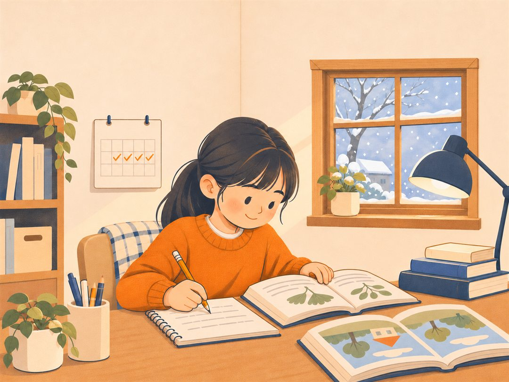

겨울방학,
어떤 계획을 세우고 계신가요?
일취월장
문해력 특강
교과는 미리, 책은 끝까지,
글은 다시 한 번!

일취월장 문해력 특강의
목표 3!
- 교과 독파새 학년 국어·사회·과학 1학기 전반부, 미리 읽고 시작!
- 완독 습관매주 1권 이상, 끝까지 읽는 힘!
- 글쓰기 기초피드백 받고 다시 쓰며 생각을 글로!
우리 학원 특강 일정
| 학년 | 요일 | 시간 |
|---|
자세한 내용은 학원에 문의해 주세요.
목표 1 · 교과 독파
새 학년 국어·사회·과학
1학기 전반부 독파!
새 학기 교과서 글, 방학에 먼저 읽어 두세요. 낯선 교과 어휘와 개념을 미리 만나 두면 새 학기 수업을 따라가기가 한결 수월해집니다.
- 1교과 어휘가 낯설지 않아요국어·사회·과학에 나오는 개념어의 뜻과 쓰임을 미리 익혀, 수업에서 처음 듣는 말이 줄어듭니다.
- 2핵심을 찾는 눈이 생겨요문단마다 중심 문장을 찾는 연습으로, 긴 교과 글에서도 무엇이 중요한지 가려 읽습니다.
- 3요약하며 내 것으로 만들어요읽은 내용을 간추려 정리하면서, 무엇을 이해했는지 스스로 확인합니다.
온라인 교과 독해 프로그램 화면 · 화살표나 손가락으로 넘겨 보세요
목표 2·3 · 완독 습관 · 글쓰기 기초
끝까지 읽고,
생각을 글로 쓴다!
읽는 습관과 쓰는 힘, 이번 겨울에 함께 키웁니다.
주 1권 이상 완독
→ 독서 습관 형성
수준에 맞는 책을 골라 매주 1권 이상 끝까지 읽습니다. 매주 완독을 이어 가며 방학 동안 책 읽는 습관을 만듭니다.
다양한 독후 활동 훈련
→ 글쓰기 기초 · 깊이 있는 사고력
읽은 책으로 독후감을 쓰고, 선생님 피드백을 받아 다시 씁니다. 완성한 글은 독서로에 기록합니다. 내 생각을 근거와 함께 쓰는 연습으로 글쓰기 기초를 다지고 깊이 생각하는 힘을 기릅니다.
완성한 독후감은 독서로에 기록
독서로는 교육부와 한국교육학술정보원이 운영하는 학생 독서교육 플랫폼입니다. 완성한 독후감을 버튼으로 옮겨 기록할 수 있습니다.
독서로 기록을 학교생활기록부와 연동하는 방안은 교육부가 추진하고 있습니다.
독후감 · 피드백 받고 다시 쓰기
피드백 한 번,
글이 이렇게 달라집니다!
혼자 쓴 글에 선생님이 예시를 들어 구체적으로 피드백하고, 아이는 그 피드백을 반영해 다시 씁니다. 최종 피드백까지 받은 글은 독서로에 저장합니다.
- 스스로 쓰기
- 선생님 피드백
- 다시 쓰기
- 최종 피드백
- 독서로에 저장
독후감 평가 보고서
우리 아이 글쓰기,
강점과 키울 점이 한눈에!
선생님이 아이의 독후감을 평가해 보고서로 정리해 드립니다. 다섯 영역의 성취도와 영역마다 남긴 선생님 총평으로, 아이가 무엇을 잘하고 무엇을 더 키우면 좋을지 확인할 수 있습니다.
보고서는 아이가 처음 스스로 쓴 글(1차)을 기준으로 만들어집니다.
이번 겨울방학,
목표는 딱 3가지!
- 교과 독파 새 학년 국어·사회·과학 1학기 전반부
- 완독 습관 매주 1권 이상 끝까지
- 글쓰기 기초 피드백 받고 다시 쓰기
문의·신청
특강을 여는 학원에
문의해 주세요
일취월장 문해력 특강은 학원에서 운영합니다. 수업 일정과 특강비는 안내를 받은 학원에 문의해 주세요.